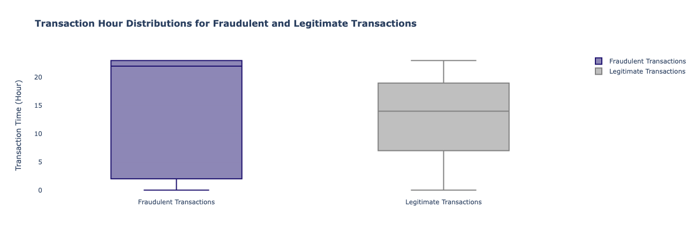

Credit Card Fraud Detection: A Machine Learning Approach
Credit card fraud is a serious concern for financial institutions and consumers alike. With the increasing use of digital payments, the instances of fraudulent transactions have also risen. It's imperative to have a robust fraud detection system in place to prevent financial losses and protect consumers' sensitive information. Machine learning algorithms have proven to be highly effective in detecting credit card fraud, thanks to their ability to analyze large datasets, identify patterns, and adapt to changing patterns of behavior.
Table of Content
Definition of Credit Card Fraud
Credit card fraud refers to the unauthorized use of a credit card or credit card information to make purchases or obtain cash. The scammer doesn’t need to actually have the physical card to commit this fraud. According to 2022 data from the Federal Trade Commission (FTC), credit card fraud is the most common type of identity theft.
Types of Credit Card Fraud
Credit card fraud falls into two basic categories:
Card-present Fraud
Card-present fraud happens when the criminal uses a stolen or lost card to make fraudulent purchases. Criminals may also leverage card skimmers installed over the card slot on an ATM or other card reader, like at a gas pump, to create a fake or cloned card. When you slide through the slot, the skimmer reads and stores all your data. Thankfully, cards that come equipped with EMV chips make it more difficult for scammers to create duplicate cards.
Card-not-present Fraud
Card-not-present fraud is committed over the phone or online when a scammer has the card details but not the physical card. This information could have been bought on the dark web or could have been acquired through a phishing scam or data breach.
In some cases, fraudsters can get a hold of personal information by dumpster diving, skimming or stealing mail, with details like your home address, SSN and birthdate, they might be able to access your credit card account or apply for a new card in your name.
Signs of Credit Card Fraud
Here are some common signs to look for if you suspect credit card fraud:
- Unfamiliar transactions on monthly account statements
- Small account charges, which hackers sometimes use to avoid detection
- Blocked access to an account
- Changes to a credit report that weren’t authorized, like new or unfamiliar accounts or addresses
- Unexpected calls from creditors or collection agencies
Industry Practices
While statistics released by FTC may fuel consumer fear of credit card fraud, cardholders can take comfort in the fact that the major credit card networks - Visa, Mastercard, American Express, and Discover - offer $0 liability protection.
Of the 4 major credit card networks that process credit card transactions, Visa and Mastercard don’t issue credit card directly to consumers. Instead, they work with bands, credit unions and other financial institutions that do. American Express and Discover are credit card networks that also act as card issuers.
Visa
The visa credit card network uses what it calls Visa Advanced Authorization to fight fraudsters looking to make purchases in your name. This fraud detection system uses AI and ML to analyze large volumes of data for risk whenever a transaction takes place.
Here are some of the many risk attributes that Visa Advanced Authorization seeks to identify:
- Type of transaction: Is the transaction online, contactless, in-app or via chip or magnetic stripe?
- Spending history: Is the transaction in line with the cardholder’s spending patterns?
- Unusual circumstances: Is a transaction occurring at an odd time of day or for a significant amount of money?
Mastercard
Like Visa, Mastercard prioritizes identity verification in combating credit card fraud. The company’s centerpiece for authentication is the Mastercard Identity Check program, which uses its EMV 3-D Secure technology. EMV 3-D Secure is an industry standard for helping merchants and card issuers authenticate card-not-present transactions.
American Express
American Express employs a multi-faceted approach to combat credit card fraud. They utilize advanced fraud detection systems powered by ML to analyze transaction data in real-time and identify suspicious activities. Amex also employs enhanced authentication methods, such as chip and PIN technology and two-factor authentication, to add layers of security. They actively collaborate with industry partners to share information on emerging fraud trends and utilize global intelligence networks. Additionally, Amex focuses on customer education and support, offering resources to help cardholders protect their accounts. Their proactive measures include real-time alerts, card replacement in case of compromise, and fraud liability protection, all aimed at ensuring the security of their customers’ financial transactions.
Discover
Likewise, Discover utilizes sophisticated fraud detection systems to identify suspicious transactions and behaviors in real-time. Discover also employs a robust network of fraud prevention tools and technologies to protect cardholders, including enhanced authentication methods, encryption technologies, and fraud monitoring. They actively collaborate with industry partners and law enforcement agencies to share insights and combat emerging fraud trends. Discover offers 24/7 customer support for prompt reporting of potential fraud, and they provide education and resources to cardholders to help them protect their accounts. By combining technological advancements, proactive monitoring, and customer support, Discover strives to ensure the security and integrity of their cardholders’ transactions.
Credit Card Fraud Detection Practice with Random Forest and XGBoost
Credit card fraud is a serious concern for financial institutions and consumers alike, resulting in significant financial losses and damage to reputation. Machine learning has emerged as a powerful tool in the fight against fraud, enabling the development of sophisticated models that can detect and prevent fraudulent transactions in real-time. In this section, we will explore the basics of building credit card fraud detection models using ML, discussing the data, techniques, and strategies involved in creating an effective fraud detection system.
The dataset we will be using here is downloadable from Kaggle, which was generated by Kartik Shenoy. He utilized the credit card transaction dataset simulator Sparkov to generate this synthetic dataset containing legitimate and fraud transactions from Jan 1, 2019, to Dec 31, 2020. It covers credit card transactions from 999 customers and a pool of 693 merchants. According to the author of Sparkov, the speed of generating synthetic data can be as fast as 95MB/thread/min.
Data Understanding
The features in this dataset include:
- trans_date_trans_time: Transaction time
- cc_num: Credit card number
- merchant: Merchant name
- category: Category of merchant
- amt: Amount of Transaction
- first: First name of credit card holder
- last: Last name of credit card holder
- gender: Gender of credit card holder
- street: Street address of credit card holder
- city: City of credit card holder
- state: State of credit card holder
- zip: Zip code of credit card holder
- lat: Latitude of credit card holder
- long: Longitude of credit card holder
- city_pop: Credit card holder's city population
- job: Job of credit card holder
- dob: Date of birth of credit card holder
- trans_num: Transaction number
- unix_time: UNIX time of transaction
- merch_lat: Latitude of merchant
- merch_long; Longitude of merchant
- is_fraud: Binary label indicating if the transaction is fraud (1: fraud, 0: not a fraud)
import pandas as pd
train_df = pd.read_csv("Data/train.csv")
train_df = train_df.drop(columns=["Unnamed: 0"])
train_df["trans_date_trans_time"] = pd.to_datetime(train_df["trans_date_trans_time"])
train_df["dob"] = pd.to_datetime(train_df["dob"])
train_df["zip"]=train_df["zip"].values.astype(str)
train_df["cc_num"]=train_df["cc_num"].values.astype(str)
# missing values
train_df.isna().sum()
# get full name of cardholder
train_df["full_name"] = train_df["first"] + " " + train_df["last"]
# verify that each credit card only has one holder
for cc_num in train_df['cc_num'].unique():
if len(train_df[train_df["cc_num"]==cc_num]["full_name"].unique())!=1:
print("Credit card - {} is hold by multiple persons".format(cc_num))
# get age of cardholder
from datetime import date
def age(birthdate):
today = date.today()
age = today.year - birthdate.year - ((today.month, today.day) < (birthdate.month, birthdate.day))
return age
train_df["age"] = train_df["dob"].apply(age)
train_df.head(3)
# The number of unique credit cards
print("The number of unique credit cards in the training set:", train_df["cc_num"].nunique())
========================
Output: The number of unique credit cards in the training set: 983
From a data scientist's perspective, there are several features that I would consider important when it comes to credit card fraud detection. For example:
- Transaction amount: Fraudulent transactions often have much higher or lower amounts than the cardholder's usual spending patterns.
- Transaction time: Fraudulent transactions may occur at unusual times, such as late at night or early in the morning, when the cardholder is unlikely to be making a purchase.
- Transaction location: If a transaction occurs in a different location than the cardholder's usual location, it may indicate fraudulent activity.
- Merchant category: Fraudulent transactions may occur at merchants that are not typical for the cardholder's spending patterns, such as a grocery store or a gas station.
- Transaction frequency: Fraudsters often make multiple transactions in a short period of time in order to maximize their gains before the card is blocked.
- Cardholder information: Gender, age, job, etc.
Before we dive into the modeling part, let's first perform some initial exploratory data analysis to validate our intuition and gain a better understanding of the data!
Transaction Amount
# transaction amount of fraudulent transaction vs. transaction amount of legitimate transaction
from tabulate import tabulate
fraud_train_df = train_df[train_df["is_fraud"]==1]
nonfraud_train_df = train_df[train_df["is_fraud"]==0]
cols = list(fraud_train_df[["amt"]].describe()["amt"].keys())
table = [
[" "] + cols,
["Fraud"] + list(fraud_train_df[["amt"]].describe()["amt"]),
["Non-fraud"] + list(nonfraud_train_df[["amt"]].describe()["amt"])
]
print("Stats of fraud transaction amount vs. stats of non-fraud transaction amount:")
print(tabulate(table, headers='firstrow', tablefmt='fancy_grid'))
Note: As shown above, the average transaction amount for fraudulent transactions is approximately 8 times higher than that of legitimate transactions, indicating a significant difference in the monetary value of fraudulent and non-fraudulent transactions.
Transaction Time
# transaction time of fraudulent transactions vs. transaction time of legitimate transactions
train_df["hour"] = train_df["trans_date_trans_time"].dt.hour
import plotly.graph_objects as go
import numpy as np
y_fraud = train_df[train_df["is_fraud"]==1]["hour"]
y_nonfraud = train_df[train_df["is_fraud"]==0]["hour"]
fig = go.Figure()
fig.add_trace(go.Box(y=y_fraud, name='Fraudulent Transactions',
marker_color = 'indianred'))
fig.add_trace(go.Box(y=y_nonfraud, name = 'Legitimate Transactions',
marker_color = 'gray'))
fig.update_layout(
{"plot_bgcolor": "rgba(0,0,0,0)",
"paper_bgcolor": "rgba(0,0,0,0)"},
title="Transaction Hour Distributions for Fraudulent and Legitimate Transactions",
yaxis_title="Transaction Time (Hour)"
)
fig.show()

Note: Fraudulent transactions tend to happen later in the day (after 22:00 PM) or extremely early in the morning (before 2:00 AM):
- The median transaction hour for legitimate transactions is 14, while for fraudulent transactions, it's 22. This suggests that fraudulent transactions are more likely to occur later in the day.
- 50% of fraudulent transactions occurred between 22:00 PM and 23:00 PM, while for legitimate transactions this ratio is less than 25%.
Transaction Interval
# average transaction interval for fraudulent and legitimate transactions
mean_transaction_intervals_fraud = []
for cc_num in fraud_train_df["cc_num"].unique():
mean_transaction_intervals_fraud.append(fraud_train_df[fraud_train_df["cc_num"]==cc_num].sort_values(by=["trans_date_trans_time"])[["trans_date_trans_time"]].diff().mean()["trans_date_trans_time"])
mean_transaction_intervals_nonfraud = []
for cc_num in nonfraud_train_df["cc_num"].unique():
mean_transaction_intervals_nonfraud.append(nonfraud_train_df[nonfraud_train_df["cc_num"]==cc_num].sort_values(by=["trans_date_trans_time"])[["trans_date_trans_time"]].diff().mean()["trans_date_trans_time"])
table = [
[" "] + ["Average Transaction Interval"],
["Fraud"] + [pd.to_timedelta(pd.Series(mean_transaction_intervals_fraud)).mean()],
["Non-fraud"] + [pd.to_timedelta(pd.Series(mean_transaction_intervals_nonfraud)).mean()]
]
print("Average Transaction Interval for Fraudulent and Legitimate Transactions:")
print(tabulate(table, headers='firstrow', tablefmt='fancy_grid'))
Note: As shown above, fraudulent transactions tend to occur more frequently within a shorter time frame compared to legitimate transactions.
Transaction Location
# print out the credit card numbers where the transactions occured in different places
for cc_num in fraud_train_df["cc_num"].unique():
if len(fraud_train_df[fraud_train_df["cc_num"]==cc_num]["street"].unique()) > 1:
print(cc_num)
for cc_num in nonfraud_train_df["cc_num"].unique():
if len(nonfraud_train_df[nonfraud_train_df["cc_num"]==cc_num]["street"].unique()) > 1:
print(cc_num)
According to our hypothesis, a transaction occurring in a different location than the cardholder's usual location may indicate fraudulent activity. However, upon analyzing the data, we found that the address of each transaction for every cardholder is consistent, which suggests that address information cannot be used to identify fraudulent activities in this case.
While the street of a transaction may not be useful in detecting fraud, city population and state may provide some valuable information. Fraudulent transactions tend to occur more frequently in densely populated urban areas, so analyzing transaction data by city and state may help identify patterns and trends that could indicate fraudulent activity. For example:
print("The average city population where fraudulent transactions occur is: {}".format(int(train_df[train_df["is_fraud"]==1]["city_pop"].mean())))
print("The average city population where legitimate transactions occur is: {}".format(int(train_df[train_df["is_fraud"]==0]["city_pop"].mean())))
Output:
=================
The average city population where fraudulent transactions occur is: 97276
The average city population where legitimate transactions occur is: 88775
fig = go.Figure(data=go.Choropleth(
locations=train_df[train_df["is_fraud"]==1][["state"]].value_counts().reset_index()['state'], # Spatial coordinates
z = train_df[train_df["is_fraud"]==1][["state"]].value_counts().reset_index()["count"].astype(int), # Data to be color-coded
locationmode = 'USA-states', # set of locations match entries in `locations`
colorscale = 'Reds',
colorbar_title = "Amount of Fraudulent Transactions",
marker_line_color='white'
))
fig.update_layout(
title_text = 'Fraudulent Transaction Amount Across States',
geo_scope='usa', # limite map scope to USA
)
fig.show()
Note: As demonstrated above, fraudsters tend to target urban areas with higher populations and better economic status. This trend suggests that fraudsters may be more likely to target areas with greater financial resources and higher levels of commercial activity, which can make it easier for them to blend in and avoid detection.
Merchant Category
fig = make_subplots(
rows=1,
cols=2,
subplot_titles=("Top 10 Merchants (Fraud) ", "Top 10 Merchants (Non-Fraud)"))
fig.add_trace(
row=1,
col=1,
trace=go.Bar(
x=train_df[train_df['is_fraud']==1]["merchant"].value_counts().reset_index().sort_values(by=["count"], ascending=False).head(10)["merchant"],
y=train_df[train_df['is_fraud']==1]["merchant"].value_counts().reset_index().sort_values(by=["count"], ascending=False).head(10)["count"],
text=train_df[train_df['is_fraud']==1]["merchant"].value_counts().reset_index().sort_values(by=["count"], ascending=False).head(10)["count"],
name="Fraud",
marker_color="indianred"
)
)
fig.add_trace(
row=1,
col=2,
trace=go.Bar(
x=train_df[train_df['is_fraud']==0]["merchant"].value_counts().reset_index().sort_values(by=["count"], ascending=False).head(10)["merchant"],
y=train_df[train_df['is_fraud']==0]["merchant"].value_counts().reset_index().sort_values(by=["count"], ascending=False).head(10)["count"],
text=train_df[train_df['is_fraud']==0]["merchant"].value_counts().reset_index().sort_values(by=["count"], ascending=False).head(10)["count"],
name="Non-Fraud",
marker_color="gray"
)
)
fig.update_layout(
{"plot_bgcolor": "rgba(0,0,0,0)",
"paper_bgcolor": "rgba(0,0,0,0)"},
title="Top 10 Merchants",
)
fig = make_subplots(
rows=1,
cols=2,
subplot_titles=("Top 5 Category (Fraud) ", "Top 10 Category (Non-Fraud)"))
fig.add_trace(
row=1,
col=1,
trace=go.Bar(
x=train_df[train_df['is_fraud']==1]["category"].value_counts().reset_index().sort_values(by=["count"], ascending=False).head(5)["category"],
y=train_df[train_df['is_fraud']==1]["category"].value_counts().reset_index().sort_values(by=["count"], ascending=False).head(5)["count"],
text=train_df[train_df['is_fraud']==1]["category"].value_counts().reset_index().sort_values(by=["count"], ascending=False).head(5)["count"],
name="Fraud",
marker_color="indianred"
)
)
fig.add_trace(
row=1,
col=2,
trace=go.Bar(
x=train_df[train_df['is_fraud']==0]["category"].value_counts().reset_index().sort_values(by=["count"], ascending=False).head(5)["category"],
y=train_df[train_df['is_fraud']==0]["category"].value_counts().reset_index().sort_values(by=["count"], ascending=False).head(5)["count"],
text=train_df[train_df['is_fraud']==0]["category"].value_counts().reset_index().sort_values(by=["count"], ascending=False).head(5)["count"],
name="Non-Fraud",
marker_color="gray"
)
)
fig.update_layout(
{"plot_bgcolor": "rgba(0,0,0,0)",
"paper_bgcolor": "rgba(0,0,0,0)"},
title="Top 5 Categories",
)
Note: Fraudulent transactions tend to occur in the context of grocery/miscellaneous shopping, particularly when using POS machines or online platforms.
import plotly.express as px
cc_nums = ["180094608895855", "343464013864032", "3534093764340240"]
for i in range(len(cc_nums)):
example = train_df[train_df["cc_num"]==cc_nums[i]]
fig = go.Figure()
fig.add_trace(
go.Scatter(
x=example[example["is_fraud"]==0]["category"],
y=example[example["is_fraud"]==0]["hour"],
mode="markers",
marker_color="gray",
name="Non-Fraud"
)
)
fig.add_trace(
go.Scatter(
x=example[example["is_fraud"]==1]["category"],
y=example[example["is_fraud"]==1]["hour"],
mode="markers",
marker_color="indianred",
marker=dict(size=10),
name="Fraud"
)
)
fig.update_layout(
{"plot_bgcolor": "rgba(0,0,0,0)",
"paper_bgcolor": "rgba(0,0,0,0)"},
title="Spending Pattern for Cardholder No.{} (Red Points Represent Fraudulent Transactions)".format(i+1),
)
fig.update_coloraxes(showscale=False)
fig.show()
Note: We can observe diverse spending patterns for various categories among cardholders. Take cardholder no.1 as an example, he/she tends to do their grocery shopping in the early morning. Therefore, when we notice a transaction occurring late at night, such as the one at 23:00 PM, it can be flagged as a potential fraudulent activity.
We can also apply techniques such as clustering, outlier detection, or time series analysis to detect unusual transaction patterns or unexpected merchant behavior, flag transactions that deviate significantly from the cardholder's past behavior or are inconsistent with their profile.
Cardholder Information
The cardholder's information such as job, gender, and age can also be useful in identifying credit card fraud. For example, if a cardholder's job is in a high-risk industry, such as finance or healthcare, they may be more likely to be targeted by fraudsters. Similarly, if a cardholder is a senior citizen, they may be more vulnerable to certain types of fraud, such as phishing scams.
from plotly.subplots import make_subplots
import plotly.graph_objects as go
fig = make_subplots(
rows=2,
cols=2,
subplot_titles=("Gender", "Age", "Top 5 Jobs (Fraud Transactions)", "Top 5 Jobs (Non-Fraud Transactions)"))
fig.add_trace(
row=1,
col=1,
trace=go.Bar(
x=["Fraud", "Non-Fraud"],
y=[3735, 706128],
text=[3735, 706128],
name="Female",
marker_color="indianred"
)
)
fig.add_trace(
row=1,
col=1,
trace=go.Bar(
x=["Fraud", "Non-Fraud"],
y=[3771, 583041],
name="Male",
text=[3771, 583041],
marker_color="gray"
)
)
fig.add_trace(
row=1,
col=2,
trace=go.Box(
x=train_df[train_df["is_fraud"]==1]["age"].values,
name="Fraud",
marker_color="indianred"
)
)
fig.add_trace(
row=1,
col=2,
trace=go.Box(
x=train_df[train_df["is_fraud"]==0]["age"].values,
name="Non-Fraud",
marker_color="gray"
)
)
fig.add_trace(
row=2,
col=1,
trace=go.Bar(
x=['Materials engineer','Trading standards officer','Naval architect','Exhibition designer', 'Surveyor, land/geomatics'],
y=[62, 56, 53, 51, 50],
name="Fraud",
text=[62, 56, 53, 51, 50],
marker_color="indianred"
)
)
fig.add_trace(
row=2,
col=2,
trace=go.Bar(
x=['Film/video editor', 'Exhibition designer', 'Naval architect', 'Surveyor, land/geomatics', 'Designer, ceramics/pottery'],
y=[9735, 9148, 8631, 8630, 8213],
name="Non-Fraud",
text=[9735, 9148, 8631, 8630, 8213],
marker_color="gray"
)
)
fig.update_layout(title_text="Cardholder Information vs. Fraud/Non-Fraud Transactions")
fig.show()
Note:
- Males are more likely to be victims of credit card fraud than females.
- Elder individuals are more susceptible to credit card fraud compared to younger generations.
- Fraudsters tend to target individuals in certain professions, such as trading standards officers and materials engineers, more than others.
Major Techniques
In recent years, numerous studies have emerged, exploring the application of ML & DL techniques, their performance, and their potential to enhance fraud detection accuracy.
ML methods, such as logistic regression, decision trees, support vector machines, and random forests, have played a crucial role in credit card fraud detection for many years. These models excel at detecting anomalies and patterns within transactional data, leveraging features like transaction amount, merchant ID, location, and time. Studies have shown promising results in employing these ML algorithms, achieving high accuracy in detecting fraudulent transactions. However, these traditional ML approaches often face challenges in effectiveness in dealing with complex fraud patterns.
To address the limitations of traditional ML methods, recent research has increasingly embraced DL techniques. DL models, such as CNN, RNN, and DNN, offer the capability to automatically learn hierarchical representations from raw data, enabling more accurate and nuanced fraud detection. CNNs demonstrate exceptional performance in analyzing visual data, making them valuable for detecting fraudulent activities related to credit card images and identity authentication. RNNs, with their ability to handle sequential data, have shown great potential in capturing temporal dependencies and recognizing patterns in transaction sequences, unveiling sophisticated fraud schemes that span multiple transactions.
In this section, we will delve into the major methods employed for credit card fraud detection and conduct experiments to evaluate their performance. Assessing the effectiveness of these methods is crucial in discerning the most accurate and reliable approach to combat fraudulent activities.
Logistic Regression
Logistic regression models the probability of a transaction being fraudulent based on different features, such as transaction amount, location, and time. Logistic regression analyzes historical data to learn the relationship between these features and the likelihood of fraud. By setting an appropriate threshold, it can classify new transactions as either fraudulent or legitimate.
To use logistic regression, the data must meet certain prerequisites:
- Binary Dependent Variable: LR is used to model a binary outcome, such as 1-fraudulent or 0-legitimate. Therefore, the dependent variable must be binary or dichotomous.
- Data is IID: LR assumes that each observation must be independent of the others and having the identical distribution.
- No Multicollinearity: Variables are independent to each other.
The formula for LR is:
Note: The LR algorithm uses the sigmoid function to describe the correlation between dependent variable (odds) and independent variables.
Pros of LR:
- Interpretability: LR models provide clear and interpretable results. The coefficients of the model indicate the direction and strength of the relationship between the predictor and the probability of fraud.
- Flexibility: LR can handle both categorical and numerical variables, making it suitable for different types of datasets.
- Low computation complexity: LR is computationally efficient, making it suitable for large datasets with many predictors.
- Robustness: LR can handle outliers and missing data, providing robustness in the presence of imperfect data.
Cons of LR:
- Linear assumption: LR assumes a linear relationship between predictor x and the log-odds of p(y). If the assumption does not apply, the model may not be able to capture the complex patterns of fraud.
- Non-multicollinearity: LR requires that predictors are independent on each other, which makes selecting the right features important.
- Imbalanced data: LR struggles on accurately classify minority class instances if the dataset is imbalanced, leading to higher false positive rates.
- Limited predictive power: Low computing complexity also leads to limited predicting power, making it hard to capture complex patterns underneath.
Decision Tree
Decision tree algorithm is non-parametric supervised learning techniques that can be employed for classification and regression. It utilizes a tree-like structure to make decisions to classify data based on a series of rules. Each node in the tree represents a splitting criterion based on specific features or attributes, leading to subsequent nodes or leaves that depict the outcome or prediction.
Decision trees are popular due to their interpretability and ease-of-use. They are capable of handling both numerical and categorical data, and can deal with missing values automatically. However, they are prone to overfitting, especially with complex or noisy data. Thus, techniques like pruning and ensemble methods can be utilized to mitigate these limitations and enhance the accuracy and generalization power of decision trees.
Decision tree often uses Gini Index, Information Gain, and Entropy as metrics for classification. The correlation between probability of fraud and impurity index is depicted below for various metrics:
Random Forest
Random forest is an ensemble method that combines the power of multiple decision trees to create a robust and accurate prediction model. It works by constructing an ensemble of decision trees, each trained on different subsets of the data and considering different subsets of features. The algorithm then combines the predictions of these trees to make a final prediction. RF offers several advantages, including the ability to handle large and complex datasets, feature importance analysis, and resistance to overfitting. It can handle both classification and regression tasks and is suitable for handling missing data and outliers. However, it’s computationally intensive and may require tuning of hyper-parameters to optimize performance.
XGBoost
XGBoost, short for Extreme Gradient Boosting, is a powerful ML algorithm that has gained popularity in credit card fraud detection. It’s en ensemble method that combines multiple weak predictive models, such as decision trees, to create a robust and accurate fraud detection model. XGBoost excels in handling imbalanced datasets commonly found in credit card fraud detection, effectively identifying fraudulent transactions while minimizing false positives.
XGBoost algorithm can handle both numerical and categorical features, handle missing data, and automatically capture complex interactions makes it a valuable tool in detecting fraudulent activities. It also offers flexibility in parameter tuning, allowing for optimization of model performance in credit card fraud detection tasks.
Neural-Network-Based Techniques
Deep neural networks (DNN), recurrent neural networks (RNN), and convolutional neural networks (CNN) are advanced ML techniques used in credit card fraud detection to improve the accuracy and efficiency of the detection models.
DNNs are multi-layered neural networks that have the ability to learn complex patterns and hierarchies in the data. DNN models can extract high-level features from credit card transaction data, enabling them to identify subtle patterns associated with fraudulent activities. They are capable of learning from large amounts of data with different types of features, thus improving the model’s ability to detect fraud accuracy.
RNNs are particularly useful when dealing with sequential data, such as credit card transaction data over time. RNN models have a memory component that enables them to consider the temporal dependencies and capture patterns over a sequence of transactions. This helps in identifying recurring patterns associated with fraudulent transactions, such anomalies in transaction frequencies or amounts.
CNNs are primarily used for analyzing images, but they can also be adopted for credit card fraud detection. In the context of fraud detection, CNN models can be applied to visual representations of transaction data, such as heat maps or pixel-based representations to identify fraudulent patterns.
These advanced techniques offer significantly benefits in credit card fraud detection. They can handle large and complex datasets, learn from raw transactions data without the need for extensive feature engineering, and capture intricate patterns that may go unnoticed by traditional methods. However, these techniques may be computationally demanding and requiring a sufficient amount of labeled training data to achieve optimal performance. Nonetheless, by leveraging neural-network-based techniques, credit card fraud detection systems can achieve higher accuracy and better protection against fraudulent activities.
In the section below, I will discuss two significant techniques commonly used in detecting fraudulent activities: Random Forest and XGBoost.
Credit Card Fraud Detection Practice with Random Forest
Feature Engineering
In Data Understanding Section, we have analyzed the dataset and selected a few relevant features that can help identify fraudulent activities:
- transaction amount
- transaction time
- transaction interval
- transaction location
- merchant category
- cardholder information
Thus in this section we will focus on the selected features and ensure that they are properly formatted to be consumed by ML models.
# first let's remove some unnecessary columns
train_df = train_df.drop(columns=["first", "last","dob", "hour", "zip", "trans_num", "unix_time"])
# categorize features
categorical_features = ["cc_num", "merchant", "category", "gender", "street", "city", "state", "job", "full_name"]
continuous_features = ["trans_date_trans_time", "amt", "lat", "long", "city_pop", "merch_lat", "merch_long", "age"]
dependent_variable = ["is_fraud"]
Note: When dealing with a large dataset and a high number of unique values in a categorical variable like credit card numbers, a common approach is to use hashing or frequency encoding to transform the data. In the case of credit card numbers, hashing is usually preferred.
Hashing is a technique that converts a categorical value into a fixed-length numerical code, it can help reduce the dimensionality of the categorical feature space and prevent overfitting. Here we will use `FeatureHasher` from `sklearn.feature_extraction` to hash the categorical features we have.
from sklearn.feature_extraction import FeatureHasher
cc_num_hasher = FeatureHasher(n_features=10, input_type="string")
hased_cc_num = cc_num_hasher.transform([[i] for i in train_df["cc_num"].astype(str).tolist()]).toarray()
cc_num_feature_names = ["cc_num_{}".format(i) for i in range(10)]
merchant_hasher = FeatureHasher(n_features=10, input_type="string")
hashed_merchant = merchant_hasher.transform([[i] for i in train_df["merchant"].astype(str).tolist()]).toarray()
merchant_feature_names = ["merchant_{}".format(i) for i in range(10)]
category_hasher = FeatureHasher(n_features=3, input_type="string")
hashed_category = category_hasher.transform([[i] for i in train_df["category"].astype(str).tolist()]).toarray()
category_feature_names = ["category_{}".format(i) for i in range(3)]
gender_hasher = FeatureHasher(n_features=1, input_type="string")
hashed_gender = gender_hasher.transform([[i] for i in train_df["gender"].astype(str).tolist()]).toarray()
gender_feature_names = ["gender_{}".format(i) for i in range(1)]
street_hasher = FeatureHasher(n_features=10, input_type="string")
hashed_street = street_hasher.transform([[i] for i in train_df["street"].astype(str).tolist()]).toarray()
street_feature_names = ["street_{}".format(i) for i in range(10)]
city_hasher = FeatureHasher(n_features=10, input_type="string")
hashed_city = city_hasher.transform([[i] for i in train_df["city"].astype(str).tolist()]).toarray()
city_feature_names = ["city_{}".format(i) for i in range(10)]
state_hasher = FeatureHasher(n_features=3, input_type="string")
hashed_state = state_hasher.transform([[i] for i in train_df["state"].astype(str).tolist()]).toarray()
state_feature_names = ["state_{}".format(i) for i in range(3)]
job_hasher = FeatureHasher(n_features=5, input_type="string")
hashed_job = job_hasher.transform([[i] for i in train_df["job"].astype(str).tolist()]).toarray()
job_feature_names = ["job_{}".format(i) for i in range(5)]
full_name_hasher = FeatureHasher(n_features=10, input_type="string")
hashed_full_name = full_name_hasher.transform([[i] for i in train_df["full_name"].astype(str).tolist()]).toarray()
fullname_feature_names = ["fullname_{}".format(i) for i in range(10)]
hashed_features = cc_num_feature_names + merchant_feature_names + category_feature_names + gender_feature_names + street_feature_names + city_feature_names + state_feature_names + job_feature_names + fullname_feature_names
hashed_train_df = pd.DataFrame(columns=hashed_features, data=np.concatenate((hased_cc_num, hashed_merchant, hashed_category, hashed_gender, hashed_street, hashed_city, hashed_state, hashed_job, hashed_full_name), axis=1))
hashed_train_df = pd.concat([hashed_train_df, train_df[continuous_features + dependent_variable]], axis=1)
# extract year, month, day, hour from trans_date_trans_time
hashed_train_df["year"] = train_df["trans_date_trans_time"].dt.year
hashed_train_df["month"] = train_df["trans_date_trans_time"].dt.month
hashed_train_df["day"] = train_df["trans_date_trans_time"].dt.day
hashed_train_df["hour"] = train_df["trans_date_trans_time"].dt.hour
hashed_train_df = hashed_train_df.drop(columns=["trans_date_trans_time"])
hashed_train_df.head()
Splitting Imbalanced Dataset
Credit card fraud detection is a classic imbalanced dataset problem, where the number of legitimate transaction (majority class) far outweighs the number of fraudulent transactions (minority class). Random forest is a popular algorithm for classification tasks, but it can be challenging to use it efficiently with imbalanced datasets.
Here we will split the dataset in a way that ensures a representative distribution of the classes in both the training and testing sets.
hashed_train_df["is_fraud"].value_counts()
Output:
===========
is_fraud
0 1289169
1 7506
Name: count, dtype: int64
from sklearn.model_selection import train_test_split
X = hashed_train_df.drop("is_fraud", axis=1)
y = hashed_train_df["is_fraud"]
X_train, X_test, y_train, y_test = train_test_split(X, y, test_size=0.2, stratify=y, random_state=42)
print("Shape of X_train:", X_train.shape)
print("Shape of X_test:", X_test.shape)
print("Shape of y_train:", y_train.shape)
print("Shape of y_test:", y_test.shape)
Output:
==============
Shape of X_train: (1037340, 73)
Shape of X_test: (259335, 73)
Shape of y_train: (1037340,)
Shape of y_test: (259335,)
Fit & Evaluate
In order to reduce the bias towards the majority class, we will train a weighted random forest, which is a variation of the random forest algorithms that takes into account the class weight or importance of each class in the dataset. In a standard random forest algorithm, each sample in the dataset has an equal chance of being selected for training a decision tree, while in a weighted random forest, the samples are selected with a probability that is proportional to their class weight.
from sklearn.ensemble import RandomForestClassifier
from sklearn.utils.class_weight import compute_class_weight
# compute the class weights
class_weights = compute_class_weight(
class_weight="balanced",
classes=np.unique(y_train),
y=y_train)
class_weights
Output:
==========
array([ 0.50291128, 86.37302248])
# fit a weighted random forest classifier
clf = RandomForestClassifier(
class_weight={0:0.50291128, 1:86.37302248}
)
clf.fit(X_train, y_train)
# evaluate
from sklearn.metrics import classification_report, confusion_matrix
y_pred_rf = clf.predict(X_test)
cm_rf = [
[" "] + ["Predicted Class"] + [" "],
["Actual Class", "Non-Fraud(0)", "Fraud(1)"],
["Non-Fraud(0)"] + list(confusion_matrix(y_test, y_pred_rf, labels=clf.classes_)[0]),
["Fraud(1)"] + list(confusion_matrix(y_test, y_pred_rf, labels=clf.classes_)[1])
]
print("Confusion Matrix for Random Forest Classifier:")
print(tabulate(cm_rf, headers='firstrow', tablefmt='fancy_grid'))
# evaluate - classification report
print("Classification Report for Random Forest Classifier:\n")
print(classification_report(y_test, y_pred_rf))
The confusion matrix above is a table used to evaluate the performance of a classification model. It summarizes the predictions made by the model against the actual class labels of the instances in the dataset. Given the confusion matrix, the most common 4 metrics we use for classification models are:
- Accuracy:
For accuracy, we have overall accuracy and class-wise accuracy, where overall accuracy measures the total correct predictions made by a classification model, considering all the classes involved in the classification problem, while the class-wise accuracy looks at the accuracy of the model for each individual class in the classification problem.
It calculates the ratio of correctly predicted instances of a specific class to the total number of instances belonging to that class. In our case, the overall accuracy is (257819 + 965) / (257819 + 965 + 15 + 536) = 99.78% and class-wise accuracy is 99.79% (257819 / (257819 + 536)) for class 0 and 98.47% (965 / (965 + 15)) for class 1.
- Precision & Recall:
Precision and recall are two important metrics used to evaluate the performance of a classification model, particularly in situations where there is class imbalance or when the cost of false positives and false negatives is different.
Precision measures the proportion of correctly predicted positive instances out of the total instances that were predicted as positive. It focuses on the accuracy of positive predictions. It is calculated as the ratio of true positives (TP) to the sum of true positives and false positives (FP). In simpler terms, precision answers the question: "Out of all the instances predicted as positive, how many were actually positive?"
A high precision score indicates that when the model predicts an instance as positive, it is likely to be correct. It is a useful metric when the cost of false positives is high, such as in medical diagnosis, fraud detection, or spam filtering. In our case, the precision for fraud class is 965/(15+965) = 98%.
Recall, also known as sensitivity or true positive rate, measures the proportion of correctly predicted positive instances out of all the actual positive instances. It focuses on the ability of the model to identify positive instances. It is calculated as the ratio of true positives (TP) to the sum of true positives and false negatives (FN). In simpler terms, recall answers the question: "Out of all the actual positive instances, how many were correctly predicted as positive?"
A high recall score indicates that the model is good at capturing positive instances. It is a useful metric when the cost of false negatives is high, such as in disease detection or identifying security threats. In our case, the recall for fraud class is 965/1501 = 64%.
- F1 Score:
The F1 score, also known as the F-measure, is a single metric that combines precision and recall into a single value. It is particularly useful when you want to balance the trade-off between precision and recall. The formula to calculate the F1 score is as follows:
F1 score = 2 * (Precision * Recall) / (Precision + Recall)
The F1 score ranges from 0 to 1, where 1 indicates the best possible value, representing a perfect balance between precision and recall. The F1 score is commonly used when dealing with imbalanced datasets or when both precision and recall are equally important. It provides a more comprehensive evaluation of a model's performance, taking into account both the ability to identify positive instances (recall) and the accuracy of those predictions (precision).
Credit Card Fraud Detection with XGBoost
# Create XGBoost classifier model
import xgboost as xgb
xgb_model = xgb.XGBClassifier()
# Train the model
xgb_model.fit(X_train, y_train)
# Evaluate the model
# Make predictions on the test set
y_pred_xgb = xgb_model.predict(X_test)
cm_xgb = [
[" "] + ["Predicted Class"] + [" "],
["Actual Class", "Non-Fraud(0)", "Fraud(1)"],
["Non-Fraud(0)"] + list(confusion_matrix(y_test, y_pred_xgb)[0]),
["Fraud(1)"] + list(confusion_matrix(y_test, y_pred_xgb)[1])
]
print("Confusion Matrix for XGBoost:")
print(tabulate(cm_xgb, headers='firstrow', tablefmt='fancy_grid'))
print("Classification Report for XGBoost:\n")
print(classification_report(y_test, y_pred_xgb))
Check my GitHub repo more original code: https://github.com/Qin-Datahub/Credit-Card-Fraud-Detection/blob/main/Credit-card-fraud-detection-with-simulated-transactions.ipynb.
Existing Challenges
Even though the advancement of AI/ML has revolutionized the way of preventing credit card fraud. We are still facing with several challenges in the industry, which require continuous efforts to overcome. Some of the key challenges include:
- Imbalanced Data: Credit card fraud cases are typically rare compared to legitimate transactions, resulting in imbalanced datasets. This imbalance can affect the performance of machine learning algorithms and may lead to biased models that struggle to accurately detect fraud.
- Evolving Fraud Techniques: Fraudsters are constantly adapting their techniques to bypass detection systems. They employ sophisticated strategies such as synthetic identity theft, identity spoofing, and collusion attacks, making it challenging for traditional fraud detection methods to keep up.
- Real-Time Detection: Given the vast number of credit card transactions occurring every second, fraud detection systems need to operate in real-time to quickly identify and respond to fraudulent transactions. This necessitates high processing power and efficient algorithms capable of handling large data volumes within tight timeframes.
- Dynamic Fraud Patterns: Fraud patterns can change rapidly, making it difficult for traditional rule-based systems to adapt and detect new fraud methods. Machine learning algorithms need to be capable of learning and updating fraud patterns in real-time without human intervention.
- Balancing False Positives and Negatives: Maximizing fraud detection accuracy while minimizing false positives is crucial. False positives bring inconvenience to legitimate customers, leading to dissatisfaction and potential financial losses for businesses. Striking the right balance between accurately identifying fraud and minimizing false alarms is a continual challenge.
- Data Privacy Concerns: Fraud detection systems often require access to sensitive customer information, raising concerns about data privacy and security. Striking a balance between effective fraud detection and protecting customer privacy is essential to maintain trust and compliance with regulatory requirements.